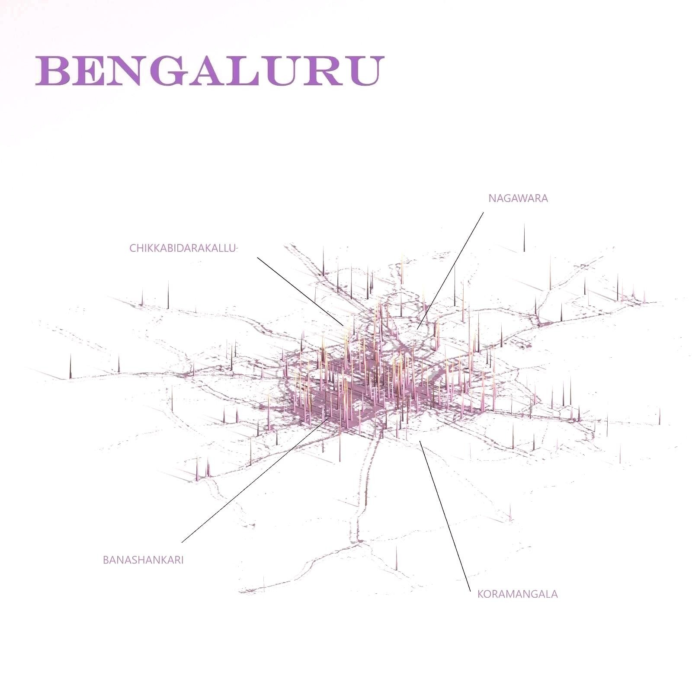

Road Accidents in India
2018 - 2021
2018 - 2021


Fatalities
Karnataka vs top 5 and bottom 5 states
Karnataka vs top 5 and bottom 5 states


According to WHO,
Ambulance requirement is
Ambulance requirement is


Total Ambulances
Covered under National Ambulance Services (NAS)
Under 108 Emergency Response and 102 Basic Patient Transport
Covered under National Ambulance Services (NAS)
Under 108 Emergency Response and 102 Basic Patient Transport
22,115
1,856
Advanced Life Support (ALS)
Advanced Life Support (ALS)
16,859
Basic Life Support (BLS)
Basic Life Support (BLS)
3,253
Patient Transport Vehicle (PTV)
Patient Transport Vehicle (PTV)
17
Boat
Boat
131
Bike
Bike


Bengaluru, Karnataka
1.1
crore
Population
741
sq km
Area
45
count
Ambulances
(public)
(public)


Location of hospitals in Bengaluru


Routemap of all
ambulances
February 2023
February 2023


Ambulance
activity
February 2023
February 2023


Vehicle density
February 2023
February 2023



Ambulance utilization : 48%
February 2023
February 2023


Distance travelled by ambulances
February 2023
February 2023


Daily Ambulance Activity over 24 hours
February 2023
February 2023


Count of ambulance vs date
February 2023
February 2023